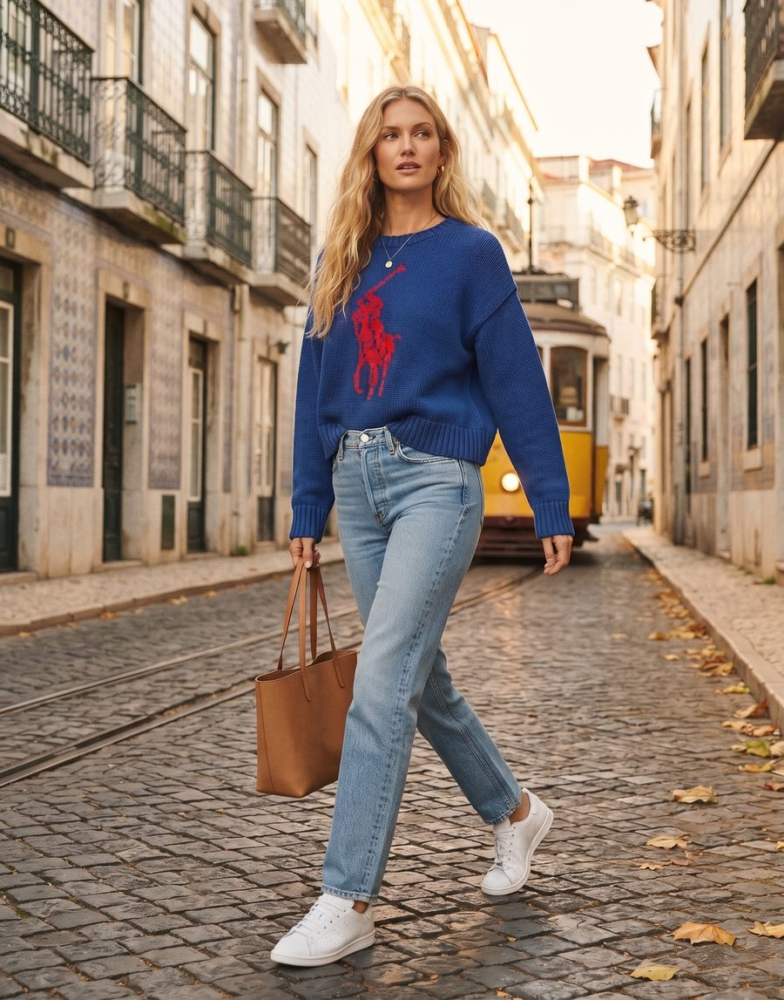
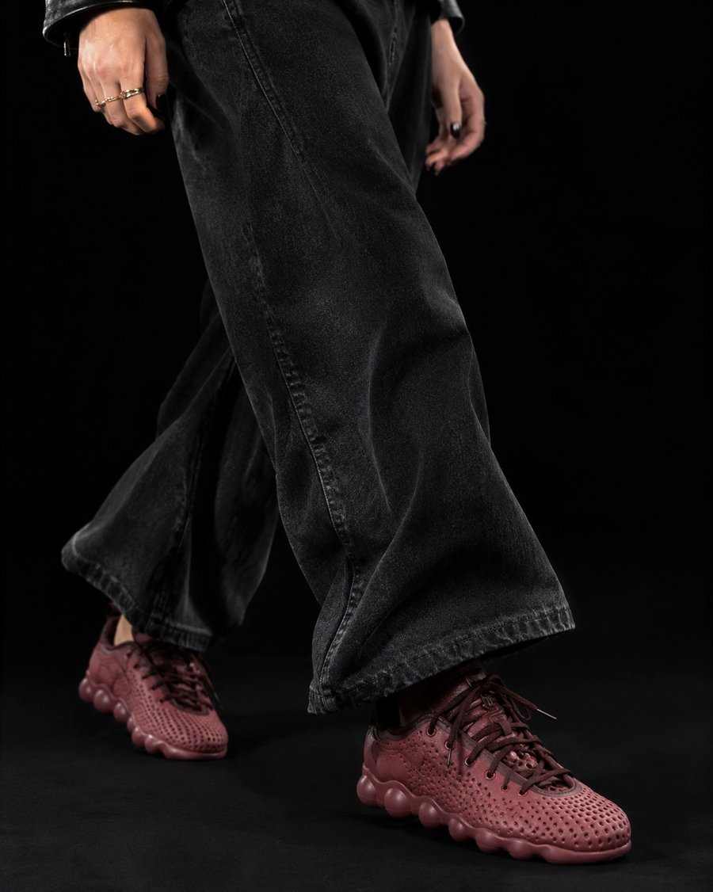

Bendito Closet: a fundadora que abriu o próprio armário para dar uma segunda vida à moda
Loja online de moda em segunda mão com curadoria pessoal, criada no Porto por Marianna Werneck. Mais de 50 peças de marca, a partir de 8 €, com envio para toda a Europa.
Comunicado em PDF Comunicado em Word Ver a loja
Novo: a revista Bendito Edit
Revista digital mensal com looks feitos só com peças do closet. Nº 01, dezembro de 2026: 4 looks para as festas, a peça do mês e presentes até 20 €. Ver online.
Revista em PDF · Português Magazine PDF · International edition (English)
Fotografias
Livres para publicação em artigos sobre o Bendito Closet. Clique em "Descarregar" para guardar cada imagem em separado.
Descarregar


Descarregar · Ver na loja

Descarregar · Ver na loja

Descarregar · Ver na loja

Descarregar · Ver na loja

Descarregar · Ver na loja

Descarregar · Ver na loja


Descarregar · Ver na loja

Descarregar · Ver na loja

Descarregar · Ver na loja


Descarregar

Descarregar

Descarregar
Descarregar

Comunicado de imprensa
Numa época de fast fashion, Marianna Werneck, profissional de TI, olhou para o roupeiro cheio de peças guardadas e decidiu pô-las a circular. Nasceu o Bendito Closet, uma loja online de moda em segunda mão, com curadoria pessoal, peças de marca a partir de 8 € e envio para toda a Europa.
Porto, 21 de novembro de 2026 — Tudo começou com um roupeiro demasiado cheio. Marianna Werneck, carioca com nacionalidade portuguesa, a viver no Porto há dez anos e profissional da área de tecnologia, deu por si rodeada de casacos, sapatos e malas que quase não usava. Muitas peças tinham sido usadas uma ou duas vezes, outras ainda tinham etiqueta.
Em vez de as deixar esquecidas, decidiu abrir o próprio armário ao público. Assim nasceu o Bendito Closet, uma loja online de moda em segunda mão com peças escolhidas, fotografadas e descritas por ela.
Amante de moda e profissional de TI, Marianna construiu ela própria a loja online, num só dia. Hoje, o site está em seis línguas, com catálogo em tempo real e saco de compras.
E não fica por aqui. Como criou a loja sozinha, Marianna quer pôr essa ferramenta ao serviço de outras pessoas: o Bendito Closet já aceita peças de terceiros. Quem tem roupa de marca parada no armário, mas não tem tempo nem meios para a vender, pode entregá-la à loja, que faz a curadoria, fotografa e vende. A dona recebe o valor da venda, menos a comissão, depois de a cliente receber a peça.
O nome brinca com a ideia de uma "bendita segunda mão": cada peça merece uma segunda vida. Numa altura em que a indústria da moda produz roupa a um ritmo nunca visto, o Bendito Closet propõe o contrário: usar o que já existe. A loja reúne hoje mais de 50 peças, de marcas como Gucci, Versace, Ralph Lauren, Moschino, Carolina Herrera e Zara, a preços a partir de 8 €.
O que torna o Bendito Closet diferente
- Curadoria de uma pessoa, não de um algoritmo. Cada peça é escolhida pela fundadora.
- Transparência total. Os defeitos vêm escritos na descrição, do ténis com o calcanhar dobrado à etiqueta tingida pela cor do casaco.
- Compra com conversa. As peças vão para o saco de compras e o pedido chega ao WhatsApp da fundadora.
- Atendimento automático 24 horas. Quem escreve no Instagram recebe logo os links das peças; quem comenta LOOK num post recebe o look por mensagem.
- Encontrada no Google. Cada peça tem página própria, preparada para aparecer nas pesquisas do Google.
- Pensada para a Europa. Site em seis línguas e envio para Portugal e toda a União Europeia.
- Curadoria para terceiros. Quem tem peças paradas pode vendê-las através da loja.
Nas palavras da fundadora
"Um dia abri o roupeiro e percebi que tinha ali uma loja inteira de peças lindas a ganhar pó. Sempre fui apaixonada por moda. Numa época em que se compra tanto e se usa tão pouco, fazia mais sentido pô-las a circular do que comprar mais. Cada peça tem uma história, e eu quero que ela continue noutra pessoa. Fiz o site num dia e percebi que podia ajudar outras pessoas a fazer o mesmo com o armário delas. É isso a bendita segunda mão."
— Marianna Werneck, fundadora do Bendito Closet
Sobre o Bendito Closet
Loja online de moda feminina em segunda mão, com curadoria pessoal, criada no Porto em novembro de 2026. Vende roupa, sapatos e acessórios de marca, novos e usados, com envio para Portugal e toda a União Europeia.
Marianna Werneck, fundadora · ola@benditocloset.pt · WhatsApp +351 936 796 783
Disponível para entrevista.